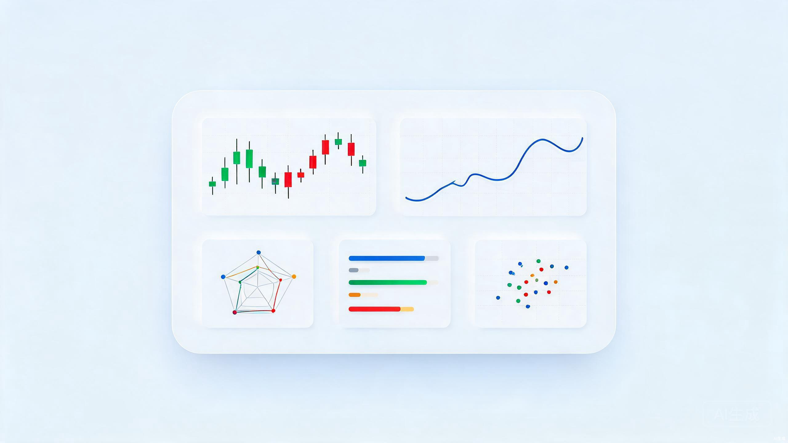

MARKET DECISION DASHBOARD
一站式多市场
决策看板
股票监控 · 杠杆 ETF 追踪 · 机会雷达，统一信号引擎驱动，纯 Node 标准库单进程运行，行情与决策数据全部落盘在本地。

为什么值得关注
统一信号引擎
股票与 ETF 共用一套动作档位与信号引擎，回测、审计、漂移报告闭环，每次算法改动都有版本号可追溯。
LLM 语义证据
机会雷达对接官方公告与新闻，由大模型抽取结构化语义证据进入评分，而非简单关键词加权。
多市场覆盖
美股、港股、韩股、A 股统一日历与行情适配，跨市场基准指数参照，支持盘前盘后风险覆盖。
AI Agent 可读
内置 MCP 只读接口，AI 代理可直接读取看板数据用于进一步分析，接口仅暴露查询能力，安全可控。